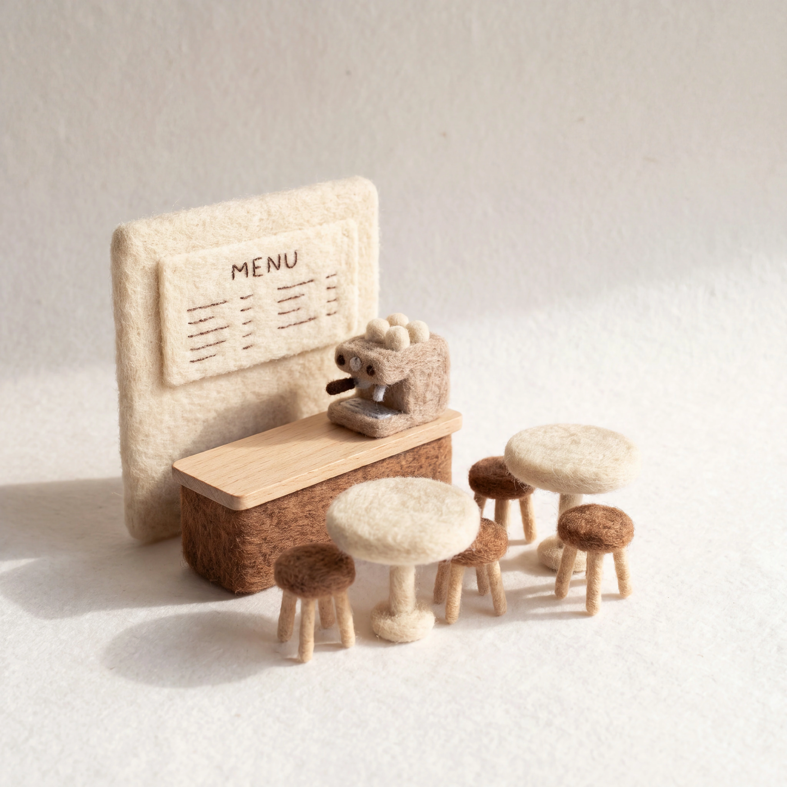
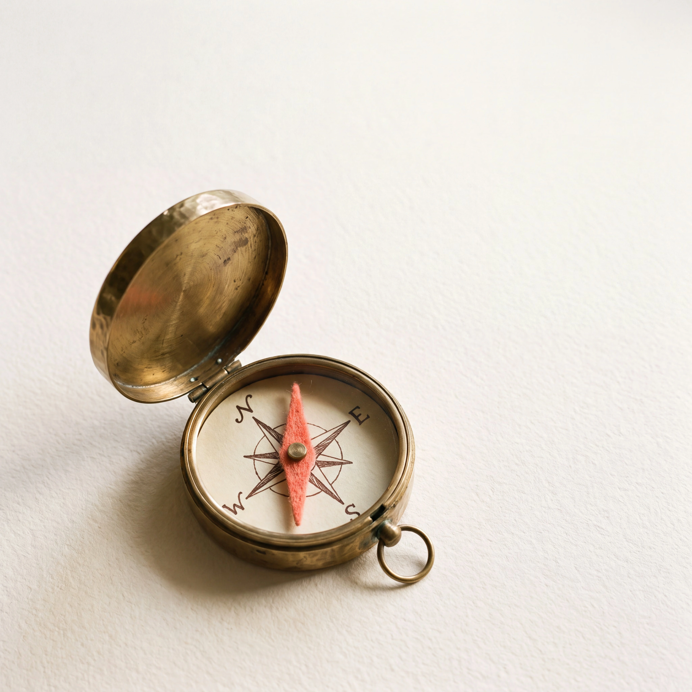

SHIFT
상품 한 장에 경계도 같이
무엇을 하는지와 어디까지 하는지
가상 촬영 실습 도안

SHIFT
무엇을 하는지와 어디까지 하는지
가상 촬영 실습 도안
SHIFT
새 제품 사진을 혼자 준비하는 수공예 판매자
직업명 옆에 필요한 상황을 씁니다.

SHIFT
제품 하나의 빛과 배경 바꾸기 남는 것: 비교할 사진 세 컷
판매 성과가 아닌 실습 산출물입니다.

SHIFT
포함: 실습 순서와 점검 질문 제외: 대신 촬영, 판매 성과 보장
실제 제공하는 범위를 적습니다.

SHIFT
제품 사진 사용 권한 촬영할 공간
개인·고객 자료를 공개할 필요는 없습니다.

SHIFT
대상 / 활동 / 남는 것 포함 / 제외 / 시작 전 확인
빈 양식 전체가 설명글에 있습니다.